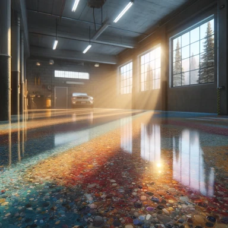
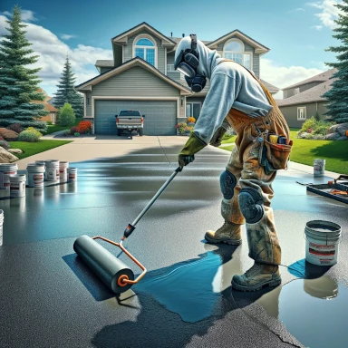

Epoxy Systems
Transform Your Floors with Wild Rose Epoxy: Leaders in Epoxy, Polyspartic, and Polyurea Coatings in Sherwood Park, Edmonton, and Surrounding Areas

Epoxy done right!
Discover the ultimate solution in flooring with Wild Rose Epoxy, your expert service provider for epoxy flooring, polyspartic, and polyurea coatings, serving Sherwood Park, Edmonton, St. Albert, Fort Saskatchewan, Spruce Grove, and Stony Plain. Our durable Torginol Flake finishes, concrete repair, and coating solutions not only protect your floors but also enhance their visual appeal.
Unmatched Durability and Aesthetics
Wild Rose Epoxy offers unparalleled durability and resistance with our epoxy flooring solutions, perfect for both residential and commercial spaces in Edmonton and St. Albert. Epoxy is renowned for its ability to withstand heavy traffic and chemical spills, making it ideal for garages, warehouses, and industrial environments.
Next-Level Protection
For those in Fort Saskatchewan and Spruce Grove seeking a quick and effective flooring solution, Wild Rose Epoxy's polyspartic and polyurea coatings provide superior protection against abrasions and chemicals. These coatings cure faster than traditional materials, ensuring minimal downtime and long-lasting durability.

The Beauty of Torginol Flake
Enhance the aesthetic of your floors with Wild Rose Epoxy's Torginol Flake, available across Stony Plain and Sherwood Park. This decorative finish adds a unique texture and variety of colors to your floors, making each surface a work of art while still offering the toughness and longevity needed for high-traffic areas.